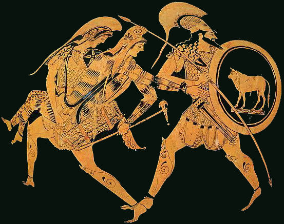

Như trên đã kể, trong cuộc hành trình của Héraclès sang vương quốc của những nữ chiến sĩ Amazones để đoạt chiếc thắt lưng của nữ hoàng Hyppolyte, Thésée đã tham dự và có công lớn. Chàng được Héraclès thưởng cho nàng Antiope, một nữ binh Amazones, tùy tướng của nữ hoàng Hyppolyte. Antiope trở thành vợ của Thésée. Hai người sống với nhau ở đô thành Athènes, cai trị thần dân của mình bằng đức độ nhân nghĩa và chí khí anh hùng. Nhưng bữa kia bỗng đâu đất bằng nổi sóng, những nữ chiến sĩ Amazones cho rằng vị nữ tướng kiệt xuất của họ là Antiope vẫn đang bị Thésée cầm tù. Họ kéo một đội chiến thuyền lớn sang, đổ bộ lên đất Athènes với hy vọng giải thoát cho Antiope thoát khỏi cuộc đời nô lệ. Những nữ chiến sĩ Amazones tràn lên vùng đồng bằng Attique. Dân cư kéo nhau chạy vào trong thành hy vọng những bức tường thành kiên cố sẽ cứu thoát họ, nhưng rồi các Amazones đột nhập được vào thành. Dân chúng lại một phen điêu đứng, kéo nhau chạy lăn khu vực thành cao tức Acropole. Các Amazones hạ trại vây quanh Acropole. Cuộc chiến đấu ở vào một tình thế hiểm nghèo và quyết định đối với những người Athènes.
Thésée xuất trận. Vợ chàng, hoàng hậu Antiope, không muốn rời chồng trong phút gian nguy này, hơn nữa, nàng vốn là một nữ tướng danh tiếng. Nàng quyết chiến đấu bên người chồng yêu quý của mình, nhưng rủi ro thay, khi nàng vừa xuất trận thì từ đâu một mũi tên bay tới cắm vào ngực nàng, hất nàng ngã lộn nhào từ trên lưng ngựa xuống đất, dưới chân người chồng. Thésée vô cùng đau đớn trước cái chết của người vợ chung thủy. Còn những nữ chiến sĩ Amazones lại không ngờ xảy ra cảnh tượng này. Họ vô cùng thương tiếc và xót xa trước cái chết của một người cùng máu mủ với họ. Cuộc chiến đấu đến đây là kết thúc. Những người Amazones xuống thuyền trở về tổ quốc xa xôi của mình. Những người Athènes làm lễ tang trọng thể cho vị nữ hoàng của họ, còn người anh hùng Thésée, trong một thời gian khá dài chìm đắm trong nỗi đau xót, nhớ thương tưởng như khó bề nguôi giảm.

Têdê chiến đấu với các nữ chiến binh Amazones